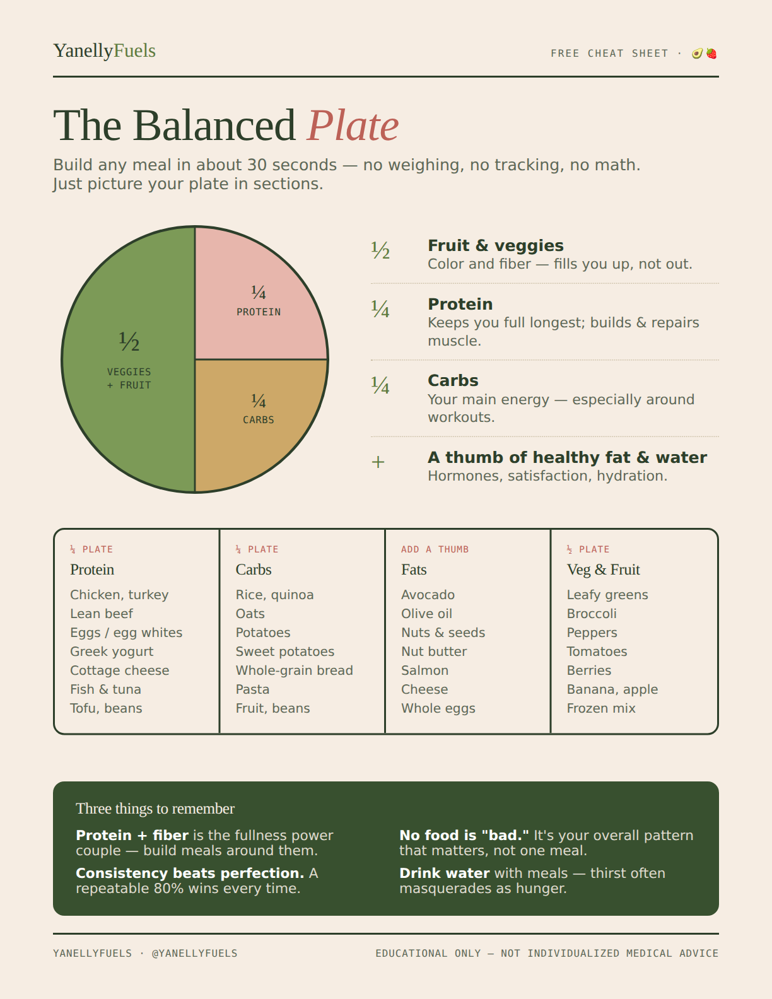

Nutrition
Balanced meals, grocery staples, meal ideas, and practical nutrition tips.
Human Nutrition & Foods Student Future Registered Dietitian Strength Training
Hi, I'm Yanelly. I'm a Human Nutrition and Foods student at the University of Houston, future Registered Dietitian, and strength-training enthusiast. I share practical nutrition, balanced meals, movement, and realistic habits that help women feel strong, healthy, and confident.

My passion for nutrition grew from my own health and fitness journey.
I'm working toward becoming a Registered Dietitian and I want to help women understand nutrition in a way that feels practical, empowering, and sustainable.
I care about balanced meals, fueling workouts, body composition goals, recovery, strength training, and helping women create healthier relationships with food.
Balanced meals, grocery staples, meal ideas, and practical nutrition tips.
Strength training, walking, recovery, and routines you can stay consistent with.
Evidence-based nutrition, myth busting, and what I am learning as a future Registered Dietitian.
Mindset, consistency, healthy habits, and building a better relationship with food and fitness.
I build most of my meals around a protein source, a carbohydrate, fruits or vegetables, and fats that make the meal satisfying. This method works whether you track macros, eyeball portions, meal prep, or throw something together in five minutes.
Get the printable guideThese are the meals and foods I come back to again and again because they help me feel energized, satisfied, and supported in my goals.
Sweet potatoes paired with chicken, turkey, steak, salmon, shrimp, vegetables, avocado, cottage cheese, and plenty of flavor.
Greek yogurt or kefir with berries, banana, cereal, granola, pumpkin seeds, honey, cinnamon, and protein when it fits the meal.
Oats with fruit, cinnamon, nut butter, protein, or simple toppings that make breakfast feel filling and supportive.
Rice, potatoes, or grains with chicken, beef, turkey, salmon, shrimp, eggs, vegetables, avocado, salsa, kimchi, or sauce.
Rice cakes, bananas, honey, oats, fruit, yogurt, or other easy carbs that help support energy and performance.
Fruit with cottage cheese, stuffed dates, yogurt bowls, quick carbs, and realistic snacks that make busy days easier.
More meals on Instagram and TikTok - @fuelwithyanelly →
Lifting can help build muscle, confidence, strength, and a body that feels capable.
Daily movement can support your goals, your energy, and your consistency without turning exercise into punishment.
Rest days, sleep, stress management, and enough food are part of making progress.
Carbs, protein, hydration, and meal timing can affect how you feel, train, and recover.
The best training split is one that supports your lifestyle, lets you recover, and helps you stay consistent.
You can pursue body composition goals while still eating enough to support training, recovery, hormones, and health.

A simple guide for building balanced meals without overthinking every bite.
Keep building the education foundation behind Yanelly Fuels.
Continue working toward the credential so I can serve women with deeper nutrition support in the future.
Share realistic meals, evidence-informed education, movement, and healthy habits with women who want to feel confident.
Pursue physique goals while keeping fueling, recovery, and health at the center.
Create a strong foundation through education, resources, community, and trust.
You can care about your health, your physique, and your goals while still feeding your body with respect. Yanelly
I share realistic nutrition, balanced meals, strength training, student life, and the process of becoming a future Registered Dietitian.
Future 1:1 nutrition support is the goal. For now, enjoy the free basics.